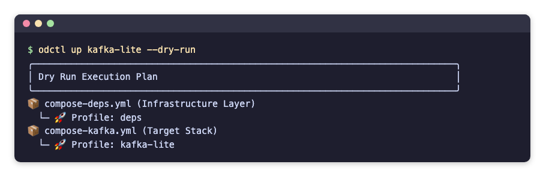

Getting Started
This page installs odctl, starts a first profile, runs each command on it and stops it. It needs no earlier page. The recording shows the main steps: install odctl, preview a profile, start it, list the containers and stop them.
Requirements
- Docker Engine or Docker Desktop, running. Give Docker 8 to 16 GB of memory.
- Python 3.10 or later.
Install
odctl is a command-line tool, so install it into its own environment with uv or pipx:
pip install odctl also works. odctl --help then lists the commands.
Create a Workspace
Run this in the folder of your project:
| docs/snippets/getting-started/commands.sh:init | |
|---|---|
It prints Workspace initialized! with the path of the new folder. The command copies the compose files and their settings into .odctl in the current directory, and writes .odctl/.env with TAG set to the CLI version. odctl reads from .odctl whenever it exists, so you can edit any file there. Workspace explains what changes with and without it, and how to customise it.
Start a Profile
A profile is a named group of services that start together. This lists every profile, with its parent stack and a description:
| docs/snippets/getting-started/commands.sh:list | |
|---|---|
Add -d to list each profile's services and host ports as well:
| docs/snippets/getting-started/commands.sh:list-details | |
|---|---|
This shows what one profile runs:
| docs/snippets/getting-started/commands.sh:explain | |
|---|---|
It prints a panel for kafka-lite: the parent stack kafka, the compose file, the profile it requires (deps), the containers connect, kafka, kafka-ui and karapace with their images, the host ports and how to reach each service. This shows the profiles kafka-lite would start, in order, without starting anything:
| docs/snippets/getting-started/commands.sh:dry-run | |
|---|---|
The dry run prints which compose files and profiles it would start:

Start it:
| docs/snippets/getting-started/commands.sh:up | |
|---|---|
odctl starts the profiles kafka-lite depends on first, then Kafka. It waits until the services are running, and healthy where they define a health check, then prints All requested profiles successfully started!. The Messaging page lists the same addresses as odctl explain.
See What Is Running
This prints the installed CLI version and whether Docker is reachable:
| docs/snippets/getting-started/commands.sh:info | |
|---|---|
The output has two lines: CLI Version: with the version, and Docker Daemon: ✅ Reachable. This lists the containers of a profile, with their state, health and ports:
| docs/snippets/getting-started/commands.sh:ps | |
|---|---|
It prints a table with one row per container:
A dash under Health means the service has no health check. This lists every container odctl manages, from every profile, including one-shot containers that have finished, such as odctl-init-deps:
| docs/snippets/getting-started/commands.sh:ps-all | |
|---|---|
This prints the last three log lines of one service, connect:
| docs/snippets/getting-started/commands.sh:logs | |
|---|---|
Each line starts with the service name, such as connect | [2026-10-24 05:14:03,065] INFO [Worker clientId=connect-connect:8083, .... Leave out -s connect to read every service of the profile, and add -f to follow the logs until you press Ctrl+C. This prints the last two lines written between ten minutes and one second ago, each with a timestamp before it:
| docs/snippets/getting-started/commands.sh:logs-time | |
|---|---|
--since and --until each take a time such as 2026-10-24T05:00:00 or a duration before now such as 10m.
Restart a Profile
This restarts the profile's containers and keeps them, with their data:
| docs/snippets/getting-started/commands.sh:restart | |
|---|---|
It prints Restarting containers... and Restart complete. A restart does not apply an edit to a compose file or .env. odctl recreate replaces the containers to apply one, as Apply a Change explains with examples. odctl pull downloads a profile's images before you start it, as Which Images Run shows.
Stop a Profile
This prints what odctl down would stop, without stopping anything:
| docs/snippets/getting-started/commands.sh:down-dry-run | |
|---|---|
This stops the profile and removes its containers:
| docs/snippets/getting-started/commands.sh:down | |
|---|---|
It prints Teardown complete. The data inside the containers goes with them, as Where Data Lives explains. It leaves the profiles that kafka-lite depends on in place, as Which Containers a Command Touches explains. This stops every profile and also removes the named volumes, such as the shared jar volume odctl-shared-deps. It asks Are you sure? first, and stops only after you answer y:
| docs/snippets/getting-started/commands.sh:down-all | |
|---|---|
In a script, --yes answers the prompt:
| docs/snippets/getting-started/commands.sh:down-all-yes | |
|---|---|
Code in the Guides
Every command and file in these pages is kept in the repository under docs/snippets, one folder per page, and the end-to-end tests run it on every release. A code block whose title names a file is a copy of that file, or of the section after the colon. The links on the published site point at the release that the docs describe.
Use It with an AI Assistant
The docs site publishes llms.txt, an index of these pages for AI assistants, and llms-full.txt with every page in one file. The repository also has an odctl skill in skills/odctl/SKILL.md, generated from the profiles, which tells an assistant which profile to start and how to reach each service. For Claude Code, copy the skills/odctl folder into ~/.claude/skills/.